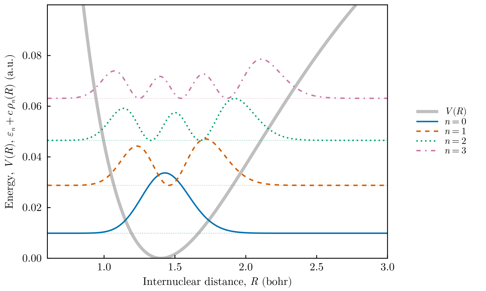
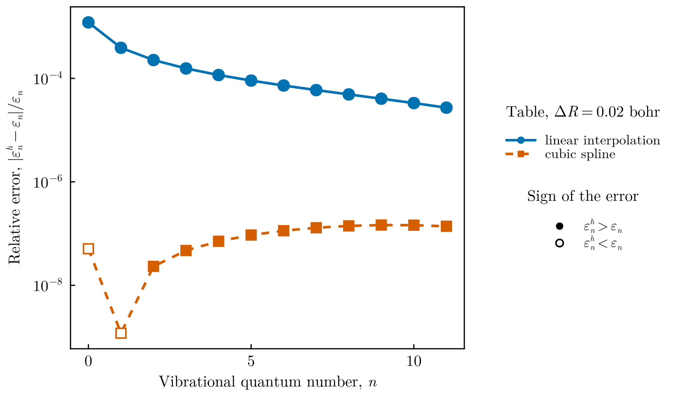

Vibrational levels from a tabulated potential
This tutorial computes the vibrational levels of a diatomic molecule from a potential energy curve given as a table of values, as produced by an electronic-structure calculation or by experiment. It uses two features introduced in FEMTISE v0.2.0: potentials read from data files and particles of arbitrary mass. In atomic units the Hamiltonian is
\[\hat H = -\frac{1}{2\mu}\frac{d^2}{dR^2} + V(R),\]
where $R$ is the internuclear distance and $\mu = 918.08\,m_e$ the reduced mass of the two protons of H₂. The table is generated from the Morse potential
\[V(R) = D\left[1-e^{-a(R-R_e)}\right]^2,\qquad \varepsilon_n = \omega\left(n+\tfrac12\right)-\frac{\omega^2}{4D}\left(n+\tfrac12\right)^2, \quad \omega = a\sqrt{2D/\mu},\]
with $D = 0.1745$ hartree, $a = 1.0282$ bohr⁻¹ and $R_e = 1.4011$ bohr, so that the levels obtained from the table can be compared with the exact ones.
All files are in src/tabulated_morse_vibrations/ of the FEMTISE_TUTORIAL repository.
1. The data file
pec.dat (written by make_potential_table.jl) has two columns, $R$ in bohr and $V(R)$ in hartree, on a grid with spacing $\Delta R = 0.02$ bohr. Lines starting with # are comments:
# Morse potential energy curve of H2 (atomic units)
# R (bohr) V(R) (hartree)
0.0 1.8129686525098436
0.02 1.717559043501458
...2. The input files
The potential function fields are left empty and the table, the mass and the interpolation are given in the optional settings at the end of the input file. input_cubic.dat:
full_path_name = ./output/morse_cubic
dom_type = ns
nev = 12
dimension = 1D
sigma = 0.0
adhoc_file_name =
potential_function_name =
params_potential_types =
params_potential =
analysis_param = false
output_format_type = jld2 eigen
## ONLY FOR 1D EIGENPROBLEMS
L = 8.0
Δx = 0.01
## ONLY FOR 2D EIGENPROBLEMS
Lx =
Ly =
nx =
ny =
different_masses =
reduced_density =
## OPTIONAL SETTINGS (FEMTISE v0.2.0)
masses = 918.08
potential_data_file = ./pec.dat
interpolation = cubic
quadrature_degree = 6dom_type = ns places the domain on $(0, L)$, which the table covers. The file input_linear.dat is identical except for interpolation = linear. Input files with optional settings must use output_format_type = jld2 eigen. The same calculation with the low-level interface reads
V = tabulated_potential("pec.dat"; interpolation = :cubic)
model = CartesianDiscreteModel((0.0, 8.0), (800,))
sol = solve_tise(model, V; masses = 918.08, nev = 12, quadrature_degree = 6)3. Running the tutorial
julia --project=. src/tabulated_morse_vibrations/run_tutorial.jlThe script solves both input files, compares the levels with the exact Morse levels and draws the figures. It prints
ω = 0.0200… hartree; largest relative error: linear 1.2e-3, cubic 1.5e-74. Results

The tabulated potential (thick gray line) with the four lowest vibrational levels and their probability densities $|\psi_n(R)|^2$, drawn at the height of each level. The densities become asymmetric as the anharmonicity of the curve grows.

Relative error of the twelve lowest levels. With the same table and the same mesh, the natural cubic spline is four orders of magnitude more accurate than linear interpolation: the error of the levels is dominated by the interpolation of the table, not by the finite elements. Filled markers indicate levels above the exact value, open markers levels below: the variational upper bound holds for the interpolated potential, not for the exact curve the table was sampled from.
5. Things to try
- Change the spacing of the table in
make_potential_table.jland check that the error scales as $\Delta R^2$ (linear) and $\Delta R^4$ (cubic spline). - Replace
pec.datby a potential energy curve of your own, for example from an ab initio calculation. Make sure the table covers the whole domain $(0, L)$, or setextrapolation = :flatin the low-level interface. - Use the mass of a different isotopologue (HD: $\mu = 1223.9$, D₂: $\mu = 1835.2$) and observe the $1/\sqrt{\mu}$ scaling of the vibrational frequency.